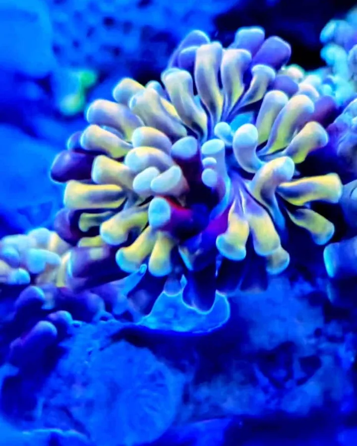
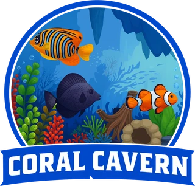
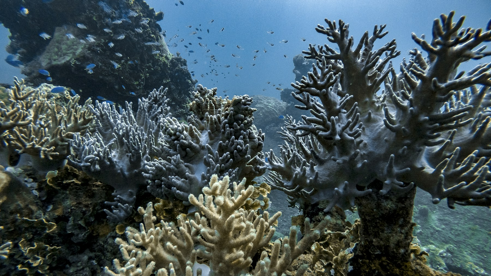
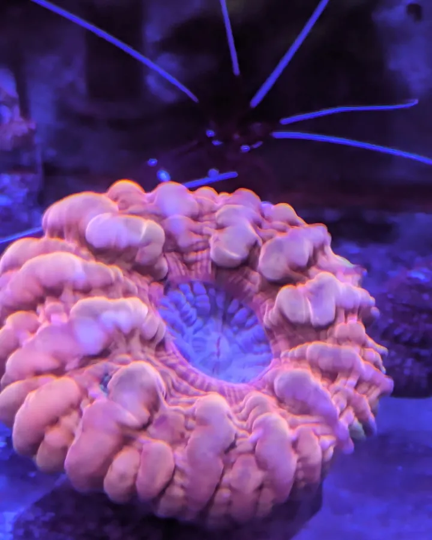
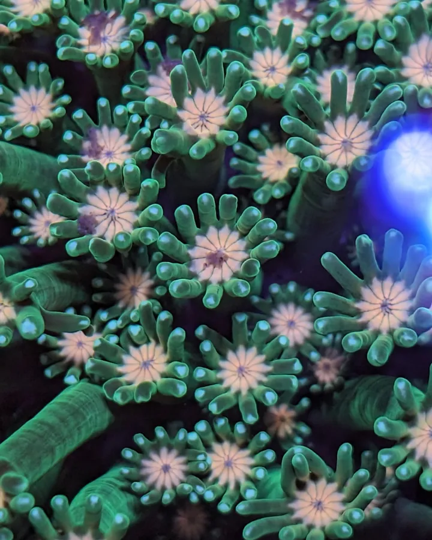

LARGE POLYP STONY
LPS corals.
Expressive shapes and flowing polyps. Many favor moderate lighting and gentle, indirect flow. Needs vary by species.
Find your LPS ↗
Coral CavernSALEM, OREGONTHE REEF JOURNAL
Understand the animals, the water and the choices
that make your aquarium thrive.
KNOW YOUR REEF
Choose the coral that fits your system, your light and the way you reef.

Expressive shapes and flowing polyps. Many favor moderate lighting and gentle, indirect flow. Needs vary by species.
Find your LPS ↗
Intricate structures for established reefs. Many need brighter lighting, stronger circulation and particularly consistent chemistry.
Explore SPS ↗REEF VITALS / AN INTERACTIVE FIELD GUIDE
Color starts with consistency. Explore the water conditions behind a thriving reef.
General LPS reference ranges from Coral Cavern's care articles. Species and systems differ; this is a guide, not a live tank reading.
Explore the reef journal ↗Stable temperature supports metabolism and reduces stress. Avoid rapid changes.
KEEP LEARNING

BUYING WELL / CORAL CAVERN JOURNALLook at tissue, color, extension and the questions worth asking before you buy.
Read the care article ↗WATER CHEMISTRY / CORAL CAVERN JOURNALA practical introduction to the water parameters that support LPS corals.
Read the care article ↗
YOUR FIRST FRAG / CORAL CAVERN JOURNALUnderstand coral frags and how to choose a place for them in your aquarium.
Read the care article ↗GOOD TO KNOW
A little clarity goes a long way. Ask us about your specific tank before choosing livestock.
“What you see is what you get.” A WYSIWYG listing shows the individual specimen offered. Confirm the current specimen and availability before ordering.
Start with a fully cycled, stable system. Mushroom and other soft corals can be useful starting points, but lighting, flow and tank mates still matter. We can help you compare suitable options.
Find us at 1341 Ranier Loop NW, Salem, Oregon. Call (971) 374-4572 to confirm a visit time before traveling.
Shipping method, dispatch timing and protection eligibility should be confirmed for your order. Report arrival concerns immediately, keep the packaging and document the animal. Read the current written terms before purchase.
Request an estimate for aquarium design, installation, relocation or maintenance, and pond care. Share your location and setup so the team can confirm service coverage and scope.
Livestock cards use product photographs from the supplied Coral Cavern reference catalogue. Stock photographs appear only in editorial/category sections. Where an actual specimen photo cannot be confirmed, we request a photo rather than substitute a different animal.